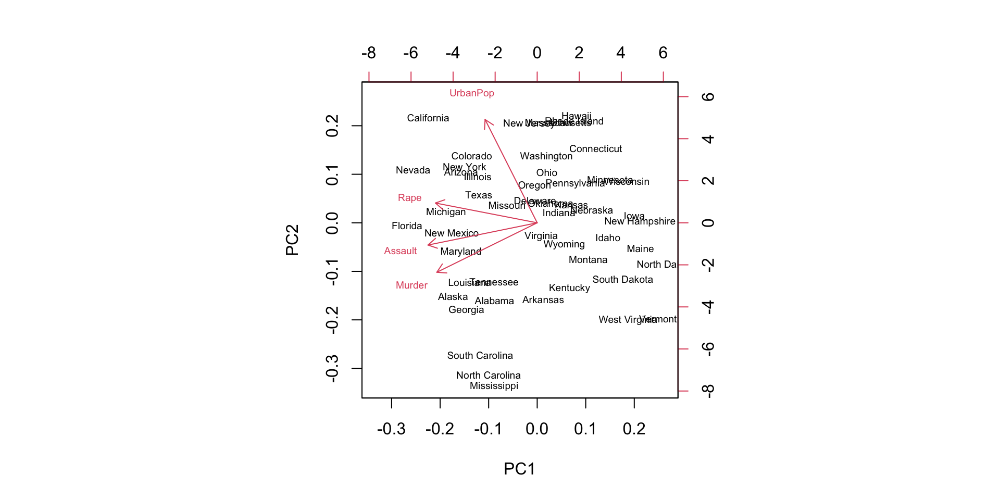

[1] 36.24574[1] 30.155[1] 495.1713[1] 22.25245[1] 0.99 122.45 25% 50% 75%
19.655 30.155 51.680 第十六章：分析資料
實踐大學
2026-06-07
描述統計的基本詞彙，每個都只差一個函式：
[1] 36.24574[1] 30.155[1] 495.1713[1] 22.25245[1] 0.99 122.45 25% 50% 75%
19.655 30.155 51.680 mean(x, trim = 0.1) 抵抗離群值；這裡每個函式都接受 na.rm=TRUE。fivenum() 給出 Tukey 五數摘要；IQR() 是四分位距。summary() 會順應它的引數——數值向量、因子、資料框、模型：
Open Close Volume
Min. : 0.99 Min. : 0.75 Min. :1.336e+06
1st Qu.: 19.66 1st Qu.: 19.65 1st Qu.:1.111e+07
Median : 30.16 Median : 30.10 Median :1.822e+07
Mean : 36.25 Mean : 36.24 Mean :5.226e+07
3rd Qu.: 51.68 3rd Qu.: 51.58 3rd Qu.:4.255e+07
Max. :122.45 Max. :122.11 Max. :2.672e+09 想快速摸清任何新資料集：summary(df) 加 str(df)，兩行回答「我手上拿的是什麼？」。
兩個序列如何一起波動？
[1] 495.3305[1] 0.9988589 Open High Low Close
Open 1.0000000 0.9994177 0.9993623 0.9988589
High 0.9994177 1.0000000 0.9989249 0.9993634
Low 0.9993623 0.9989249 1.0000000 0.9993333
Close 0.9988589 0.9993634 0.9993333 1.0000000cor() 預設 Pearson；method = "spearman" 或 "kendall" 改用等級——對離群值與非線性都更穩健。Warning
相關不是因果。 它也看不見非線性結構——散佈圖永遠要一起看。
PCA 把彼此相關的變數重新表達成依解釋變異量排序的正交主成分：
Importance of components:
PC1 PC2 PC3 PC4
Standard deviation 1.5749 0.9949 0.59713 0.41645
Proportion of Variance 0.6201 0.2474 0.08914 0.04336
Cumulative Proportion 0.6201 0.8675 0.95664 1.00000
scale.=TRUE 先標準化——單位不同時必須做。PCA 是純粹的變異量記帳；因素分析則假設存在解釋觀測相關性的潛在變數：
Loadings:
Factor1 Factor2
mpg -0.842 0.376
disp 0.864 -0.389
hp 0.596 -0.698
wt 0.974 -0.116
qsec 0.962
drat -0.745
Factor1 Factor2
SS loadings 3.317 1.722
Proportion Var 0.553 0.287
Cumulative Var 0.553 0.840當統計量的不確定性沒有現成公式時，就重抽：放回地抽取觀測值、重算、重複：
ORDINARY NONPARAMETRIC BOOTSTRAP
Call:
boot(data = dow30$Open, statistic = med.fun, R = 1000)
Bootstrap Statistics :
original bias std. error
t1* 30.155 0.0087 0.2879809 conf
[1,] 0.95 25.03 975.98 29.63 30.735一千次重算的中位數的散布，就是抽樣分布的估計——完全不需要常態假設。
str() 與 summary()——型別、範圍、缺漏。之後——也只有在之後——才輪到第十八章的正式檢定與第二十、二十一章的模型。
版權聲明。 本教材改編自 Joseph Adler 所著 R in a Nutshell: A Desktop Quick Reference（第二版，O’Reilly Media）。所有權利均由原作者與出版者保留。
僅供非商業用途。 本教材嚴格限定用於教育目的，不得用於商業獲利。
適當標註出處。 任何對本教材的重製、散布或使用，都必須適當標註原始出處。

R in a Nutshell: A Desktop Quick Reference